Implementation Process
The structure and the levels of the game were provided by the Professor. I implemented the behaviour tree nodes and constructed a behaviour tree capable of beating the tutorial level as well as level 1. My game AI also can collect all the hidden items and survive the enemy attacks. The objective of the game is to find and defeat the final boss before exiting the level. Each level contains several rooms and each may have its own objective. For example, the third room of the tutorial requires the player to get a gun and the fifth room requires the player to defeat all of its enemies. Gunned Down features four functionally identical player characters
Players
- The behaviour tree modifies the player’s blackboard to drive player movement and aiming
- The player has four movement modes: Stop, Reach, Avoid, Evade
- The player can target one enemy at a time, aiming directly at it
- The player has a health bar and can get more health by picking up hearts
- The player has a collection of guns and can switch between them freely
- Guns take different ammo and the player can get more by picking up ammo packs
- Guns have to be reloaded when they run out of ammo
Actions
- Combat actions: shoot, reload, next weapon, previous weapon, target closest enemy
- Movement actions: stop, move to, avoid, evade
“Move to” actions plot a path to the destination and move the player along it. “Avoid” actions make the player move away from an object. “Evade” actions make the player move perpendicular to the direction an object is moving
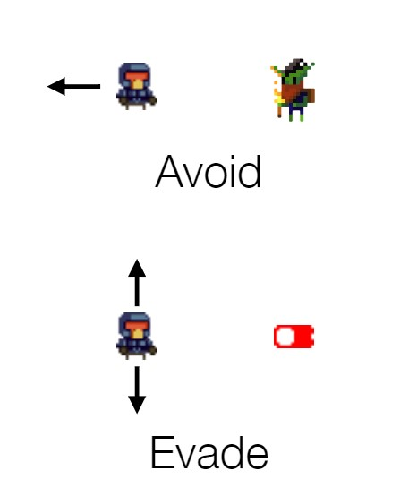 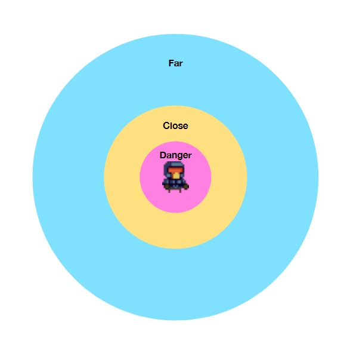Conditionals
- Combat conditionals: under attack, bullet imminent, has gun, has target, target visible, can shoot, on trap
- Player conditionals: full health, low health, full ammo, out of ammo
- Available conditionals: gun, health, ammo, key, item
- Proximity conditionals: danger, close, far
Using Behaviour Tree Editor in Unity
I designed my behaviour tree by implementing small composite behaviours first, and then I combined the composites together to form the whole behaviour tree. Since the character must get the gun and survive from enemy attacks, I created Composite behaviours for them. After coming up with some composite behaviours, I combined them and fixed the order of these composite behaviours. My behaviour tree wins the game by using a selector to go through the Composite behaviours: CheckItems, GetGun, GetKey, a sequence of detecting enemies and bullets, CheckHealth, and two other sequences. Firstly, the behaviour tree collects the available items in the game. Then, it gets the gun and the keys. After that, it runs through a sequence that calls two Composite behaviours DetectEnemy and DetectBullets. It chooses to avoid/evade from the enemies’ attacking. The next step is to check the health status of the character and see if it needs to find health. It moves to the next enemy by calling the action “MoveToClosestEnemy”, and checks whether the character has a safe distance from the enemy. Finally, it moves to the exit. I used Selectors, Sequences, Decorators such as Not and Success, Conditionals such as ItemAvailable, HealthAvailable, etc. , and Actions such as MoveToExit, MoveToClosestEnemy, etc.
Written Code
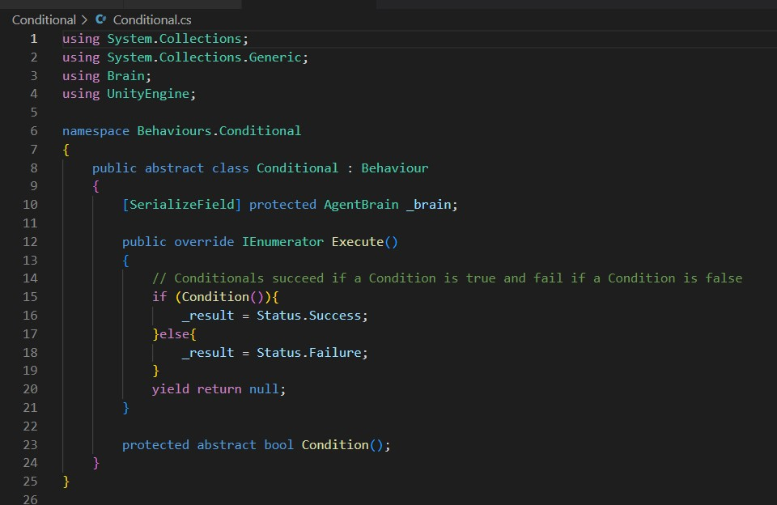 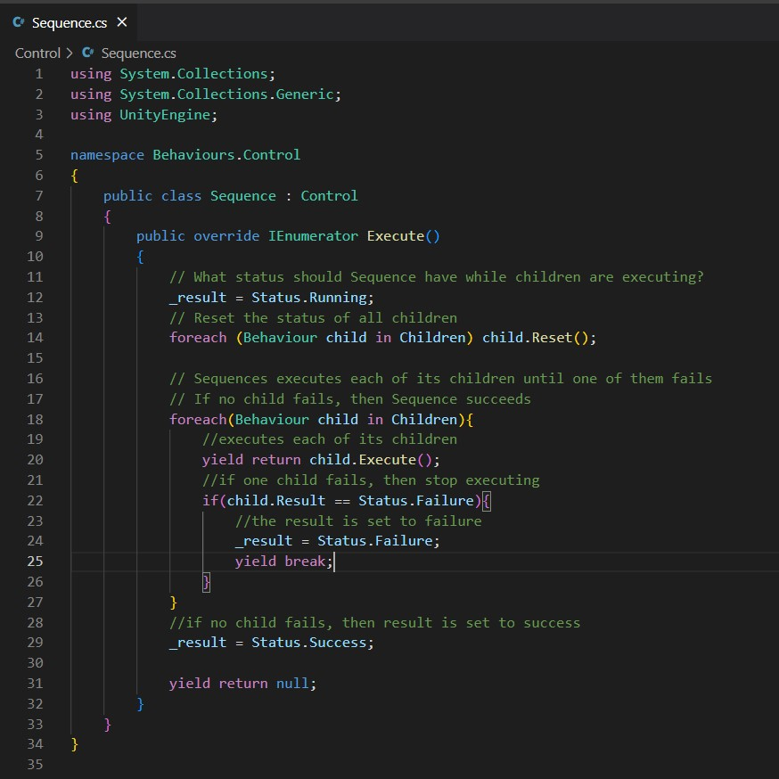 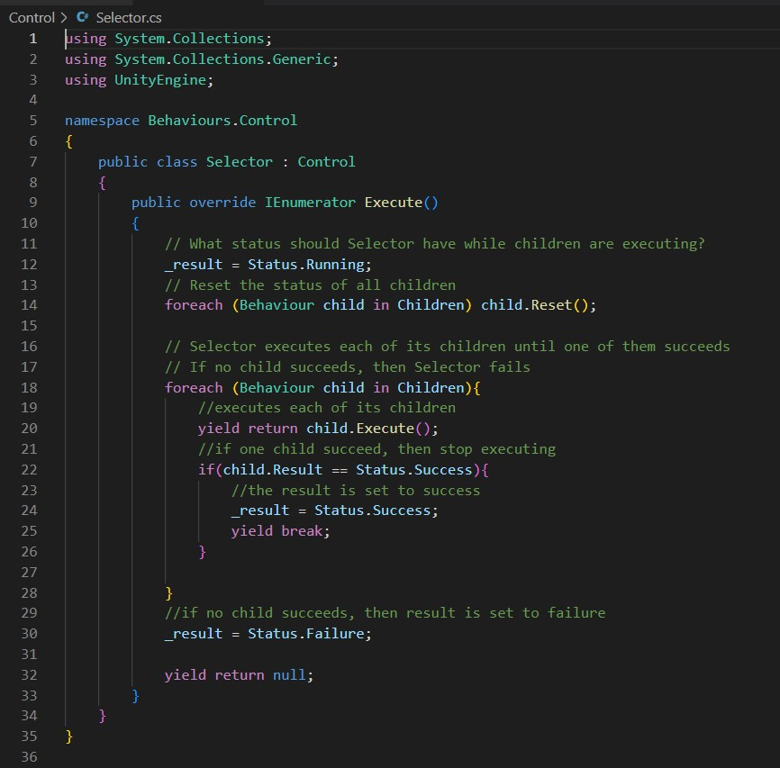 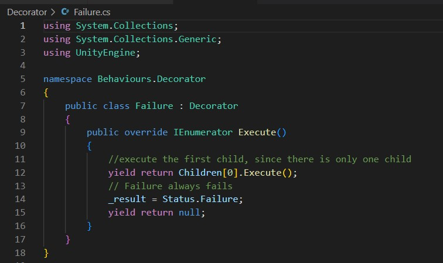 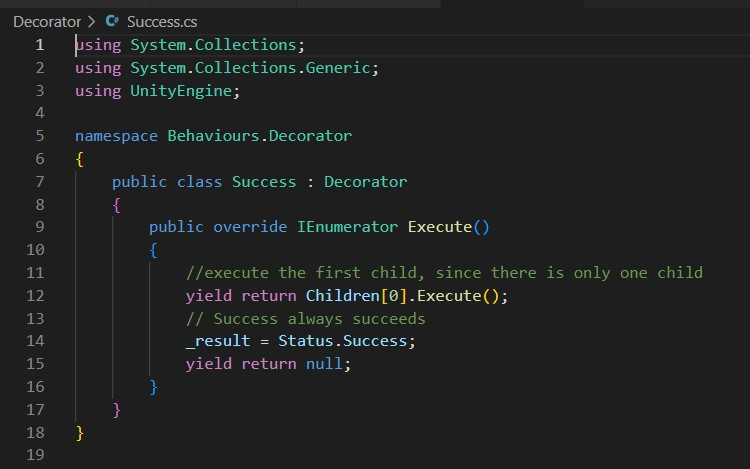 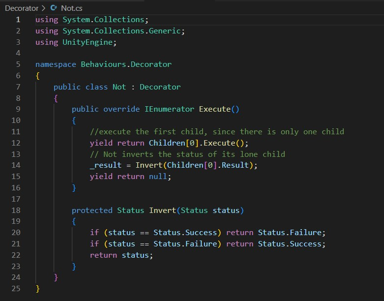I created 11 Composite behaviours for my behaviour tree, including the default “Win” behaviour.
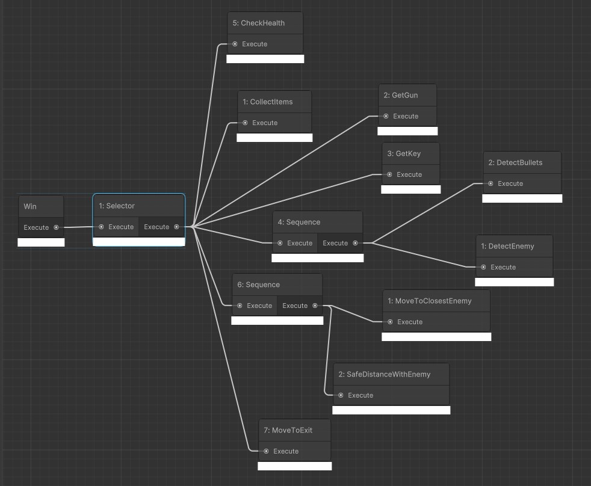GetKey is a Composite behaviour that gets the key. It runs through a sequence: if there is a key available, the character will move to the closest key.
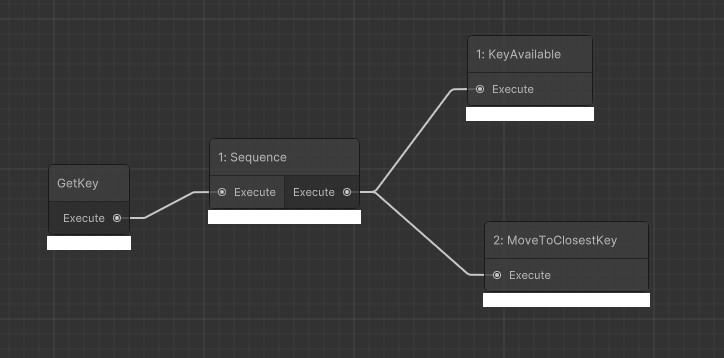GetGun is a Composite behaviour that gets the gun. It runs through a sequence: if there is a gun available, the character will move to the closest gun.
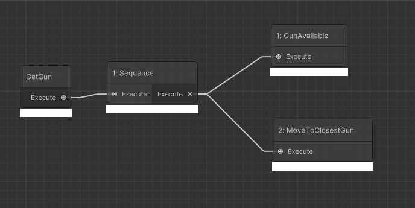ShootEnemy is a Composite behaviour that targets and shoots the enemy. It runs through a sequence: if the gun is not out of ammo, which means that it will always succeed the condition “canShoot”, it targets the closest enemy and shoot.
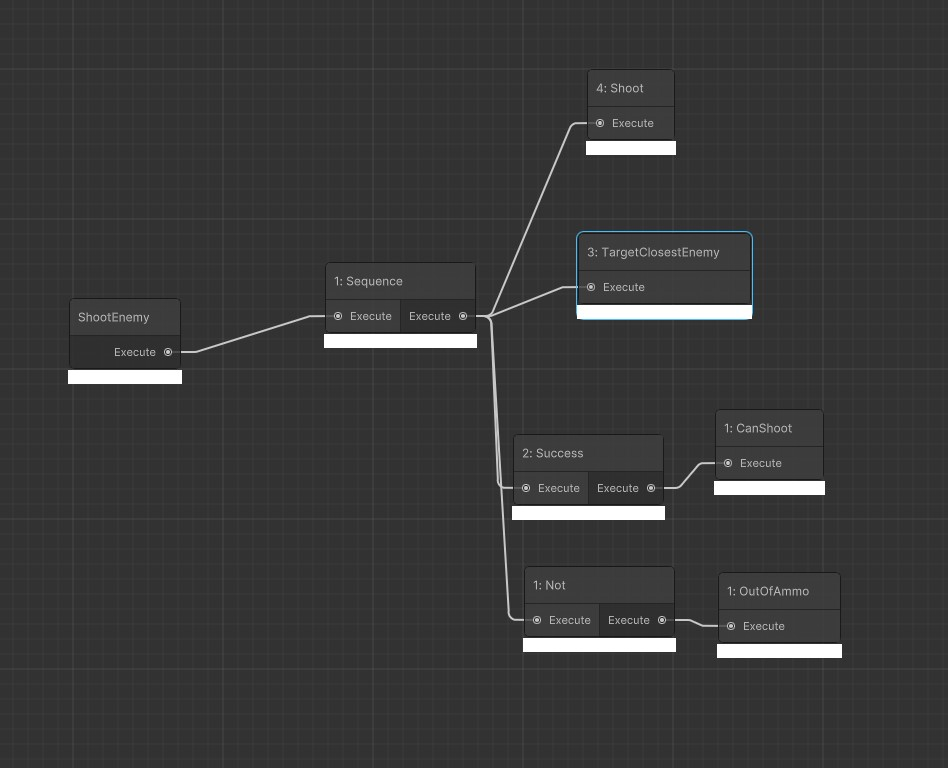DetectEnemy is a Composite behaviour that detects enemy attack and try to avoid them. It uses a selector to select through four sequences. The first sequence represents when the enemy is far from the character. The character shoots the enemy by calling the Composite ShootEnemy, and then avoids the closest enemy. The second sequence is when the enemy is close. The character evades the closest enemy first, and then shoots the enemy. The third sequence is when the enemy is in the danger zone. The character evades the closest enemy, and shoots the enemy. Finally, the last sequence represents that the character will shoot the enemy when they are under attack. I chose different methods for the character to avoid/evade/kill the enemies, because when the enemy is far, the character has time to shoot the enemy, but when the enemies are close to the character, the character should move away from the enemy first(move to a safer position), and then try to kill them.
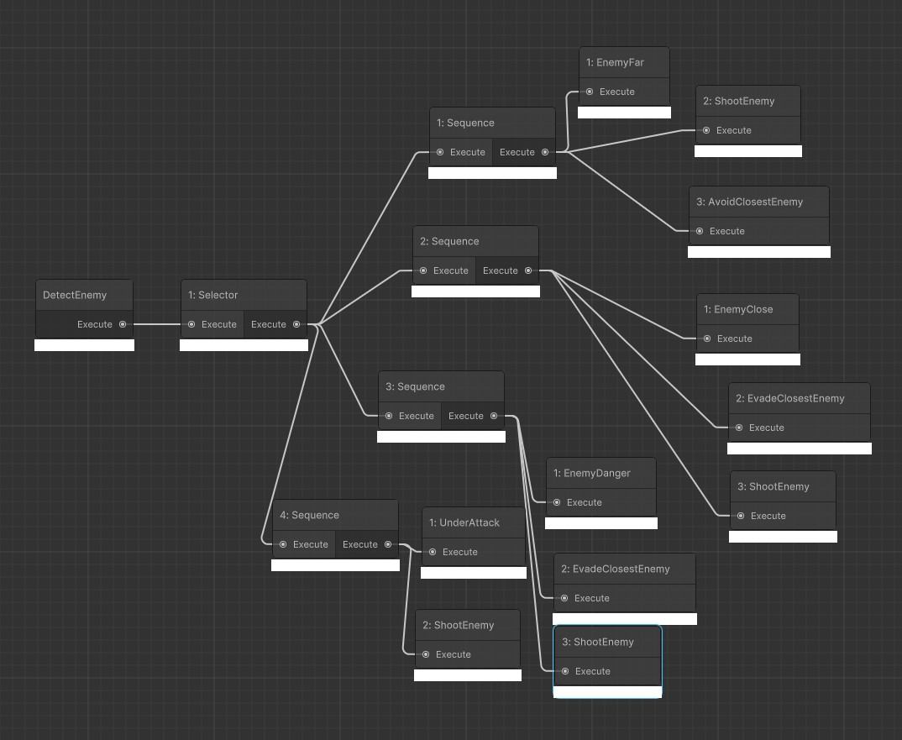DetectBullets is a Composite behaviour that detects and avoids the bullets. It runs through a sequence: if the bullet is imminent, it will select whether to the evade the closest bullet or avoid the closest bullet.
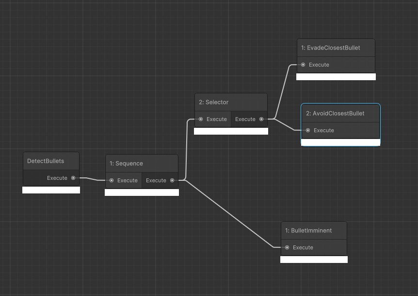CheckHealth is a Composite Behaviour that checks the character’s health status. When the health of the character is low and the health is available, the character will move to the closest health. I did not let the character moves to the health when the health is not full, because in that case, the character will get all the health even if it has a about full health status, which will be a waste of time and resources.
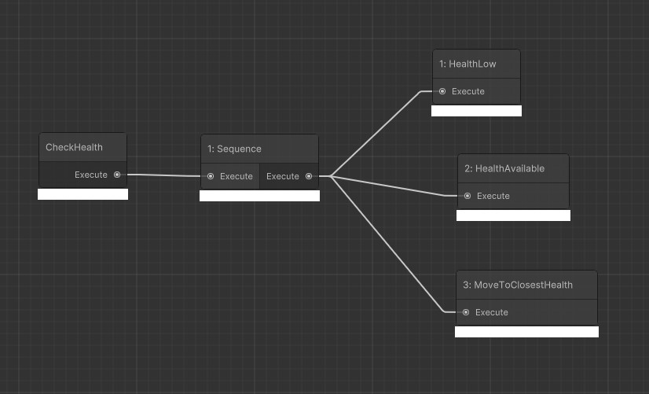GetAmmo is a Composite behaviour that makes the character moves to the closest ammo when the gun is out of ammo and ammo is available.
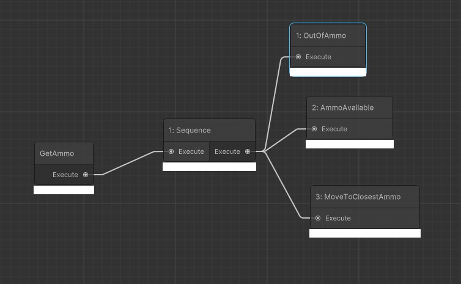CollectItems is a Composite behaviour that makes the character moves to the closest item when the item is available.

SafeDistanceWithEnemy is a Composite behaviour that runs through three sequences. It checks the three conditions of the character’s and the enemies’ positions. It makes the character runs away from the enemies in all the three conditions.
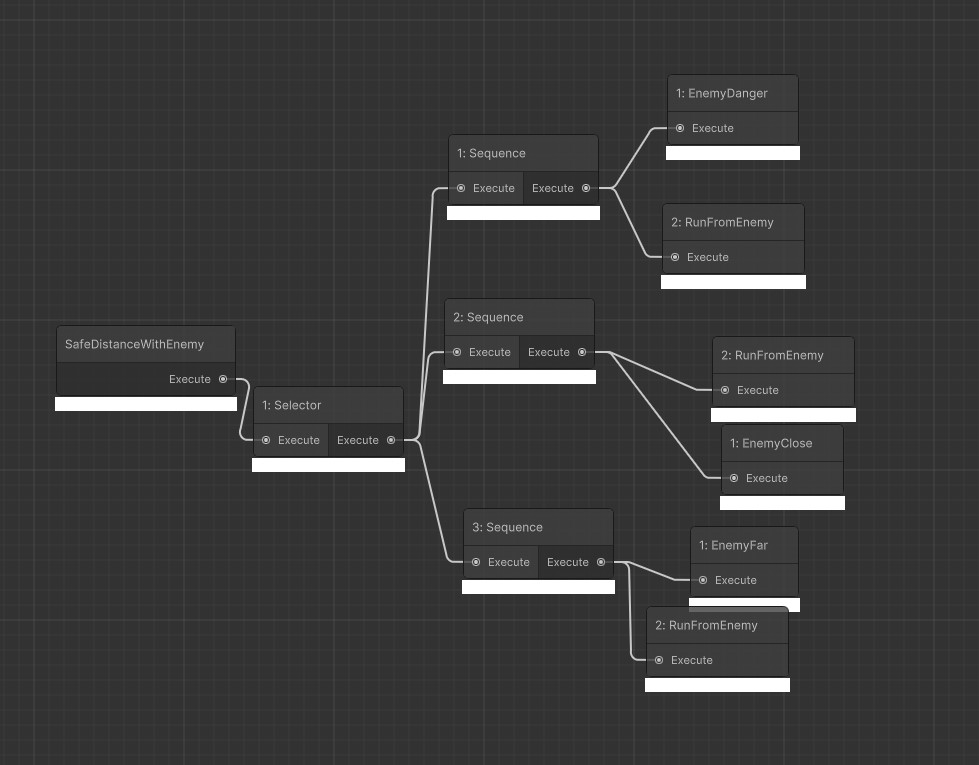RunFromEnemy is a Composite behaviour that uses a selector. It lets the character chooses to avoid the closest enemy or evade it.
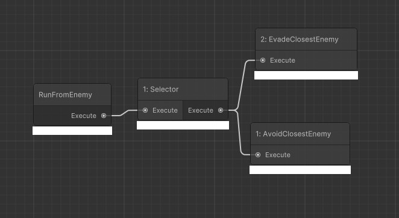